En química, un metal de transición es un elemento químico en el bloque d de la tabla periódica, aunque a veces se excluyen los elementos del grupo 12. Los elementos lantánidos y actínidos se denominan metales de transición internos y, a veces, también se consideran metales de transición.
Según la definición más amplia los metales de transición son los cuarenta elementos químicos, del 21 al 30, del 39 al 48, del 71 al 80 y del 103 al 112. El nombre de "transición" proviene de una característica que presentan estos elementos de poder ser estables por sí mismos sin necesidad de una reacción con otro elemento. Cuando a su última capa de valencia le faltan electrones para estar completa, los extrae de capas internas. Con eso es estable, pero le faltarían electrones en la capa donde los extrajo, así que los completa con otros electrones propios de otra capa. Y así sucesivamente; este fenómeno se le llama "Transición electrónica".
El escandio es un elemento químico de la tabla periódica cuyo símbolo es Sc y su número atómico es 21. Es un metal de transición que se encuentra en minerales de Escandinavia y que se clasifica con frecuencia entre los lantánidos por sus similitudes con ellos.
Configuración electrónica: [Ar] 3d¹4s²
Número atómico: 21
Masa atómica: 44,955912 u
Electronegatividad: 1,36
Descubrimiento: 1879
Descubridores: Lars Fredrik Nilson, Per Teodor Cleve
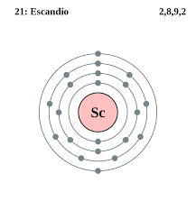El titanio es un elemento químico de símbolo Ti y número atómico 22 que se sitúa en el grupo 4 de la tabla periódica de los elementos. Es un metal de transición de color gris, baja densidad y gran dureza. Es muy resistente a la corrosión por agua del mar, agua regia y cloro.
Configuración electrónica: [Ar] 3d²4s²
Número atómico: 22
Electrones por nivel: 2, 8, 10, 2
Masa atómica: 47,867 u
Punto de fusión: 1.668 °C
Descubridor: William Gregor
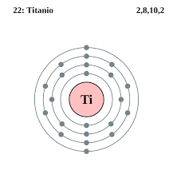El vanadio es un elemento químico de número atómico 23 situado en el grupo 5 de la tabla periódica de los elementos. Su símbolo es V. Es un metal dúctil, pero duro, poco abundante. Se encuentra en distintos minerales y se emplea principalmente en algunas aleaciones.
Configuración electrónica: [Ar] 3d³4s²
Número atómico: 23
Masa atómica: 50,9415 u
Punto de fusión: 1.910 °C
Descubrimiento: 1801
Descubridor: Andrés Manuel del Río
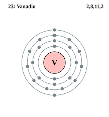El cromo es un elemento químico de número atómico 24 que se encuentra en el grupo 6 de la tabla periódica de los elementos. Su símbolo es Cr. Es un metal que se emplea especialmente en metalurgia. Su nombre cromo se debe a los distintos colores que presentan sus compuestos.
Masa atómica: 51,9961 u
Configuración electrónica: [Ar] 3d⁵4s¹
Número atómico: 24
Electronegatividad: 1,66
Punto de fusión: 1.907 °C
Descubridor: Louis Nicolas Vauquelin
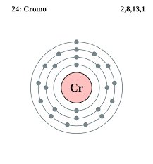El manganeso es un elemento químico de número atómico 25 situado en el grupo 7 de la tabla periódica de los elementos y se simboliza como Mn. Se encuentra como elemento libre en la naturaleza, a menudo en combinación con el hierro y en muchos minerales.
Masa atómica: 54,938044 u
Configuración electrónica: [Ar] 3d54s2
Número atómico: 25
Electronegatividad: 1,55
Descubrimiento: 1774
Descubridores: Johan Gottlieb Gahn, Carl Wilhelm Scheele, Ignatius Gottfried Kaim
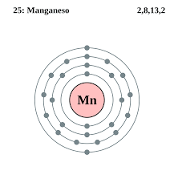El hierro es un elemento químico de número atómico 26 situado en el grupo 8, periodo 4 de la tabla periódica de los elementos. Su símbolo es Fe y tiene una masa atómica de 55,847 u.
Masa atómica: 55,845 u
Número atómico: 26
Configuración electrónica: [Ar] 3d64s2
Densidad: 7,874 g/cm³
Punto de fusión: 1.538 °C
Electronegatividad: 1,83
El cobalto es un elemento químico de número atómico 27 y símbolo Co situado en el grupo 9 de la tabla periódica de los elementos. Su masa atómica es de 58,9332. Con propiedades magnéticas similares al hierro como su dureza, resistencia a la tensión y propiedades térmicas.
Número atómico: 27
Configuración electrónica: [Ar] 3d⁷4s²
Masa atómica: 58,933195 u
Electronegatividad: 1,88
Descubrimiento: 1735
Descubridor: Georg Brandt
El níquel es un elemento químico cuyo número atómico es 28 y su símbolo es Ni, situado en el grupo 10 de la tabla periódica de los elementos.
Masa atómica: 58,6934 u
Configuración electrónica: [Ar] 3d⁸4s²
Número atómico: 28
Punto de fusión: 1.455 °C
Electronegatividad 1,91
Descubrimiento: 1751
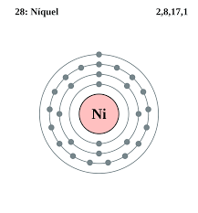El cobre, cuyo símbolo es Cu, es el elemento químico de número atómico 29. Se trata de un metal de transición de color cobrizo, es decir, rojizo anaranjado de brillo metálico que, junto con la plata, el oro y el roentgenio forma parte de la llamada familia del cobre.
Masa atómica: 63,546 u
Densidad: 8,96 g/cm³
Número atómico: 29
Configuración electrónica: [Ar] 3d¹⁰4s¹
Punto de fusión: 1.085 °C
Descubrimiento: 9000 a. C.
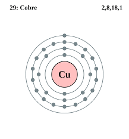El zinc, también escrito cinc, es un elemento químico esencial de número atómico 30 y símbolo Zn, situado en el grupo 12 de la tabla periódica de los elementos.
Masa atómica: 65,38 u
Número atómico: 30
Configuración electrónica: [Ar] 3d¹⁰4s²
Punto de fusión: 419,5 °C
Electronegatividad: 1,65
Punto de ebullición: 907 °C
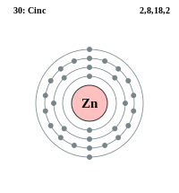El itrio es un elemento químico de la tabla periódica cuyo símbolo es Y y su número atómico es 39. Su peso atómico es 88,905. Es una tierra rara de transición del grupo IIIB. Es un metal plateado de transición, común en los minerales de tierras raras.
Configuración electrónica: [Kr] 4d15s2
Número atómico: 39
Electrones por nivel: 2,8,18,9,2
Masa atómica: 88,90585 u
Descubrimiento: 1794
Descubridor: Johan Gadolin
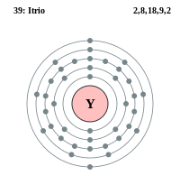El circonio o zirconio es un elemento químico de número atómico 40 y peso atómico 91.224. Situado en el grupo 4 de la tabla periódica de los elementos. Su símbolo es Zr.
Número atómico: 40
Configuración electrónica: [Kr] 4d²5s²
Masa atómica: 91,224 u
Electronegatividad: 1,33
Descubrimiento: 1789
Descubridor: Martin Heinrich Klaproth
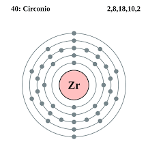El niobio es un elemento químico de número atómico 41 situado en el grupo 5 de la tabla periódica de los elementos. Se simboliza como Nb. Es un metal de transición dúctil, gris, blando y poco abundante. Se encuentra en el mineral niobita, también llamado columbita, y se utiliza en aleaciones.
Configuración electrónica: [Kr] 4d⁴5s¹
Número atómico: 41
Masa atómica: 92,90638 u
Electronegatividad: 1,6
Descubrimiento: 1801
Descubridor: Charles Hatchett
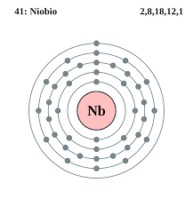El molibdeno es un elemento químico de número atómico 42 que se encuentra en el grupo 6 de la tabla periódica de los elementos y se simboliza como Mo. El molibdeno es un metal esencial desde el punto de vista biológico y se utiliza sobre todo en aceros aleados.
Configuración electrónica: [Kr] 4d₅5s₁
Número atómico: 42
Masa atómica: 95,95 u
Electronegatividad: 2,16
Descubrimiento: 1778
Descubridor: Carl Wilhelm Scheele
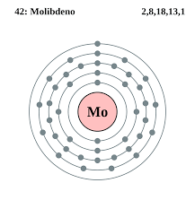El tecnecio es el más ligero de los elementos químicos que no cuentan con isótopos estables y el primer elemento sintético que se encuentra en la tabla periódica. Su número atómico es el 43 y su símbolo es Tc.
Configuración electrónica: [Kr] 4d55s2
Número atómico: 43
Masa atómica: 98 u
Electronegatividad: 1,9
Descubrimiento: 1937
Descubridores: Emilio Gino Segrè, Carlo Perrier
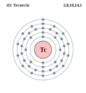El rutenio es un elemento químico de número atómico 44 situado en el grupo 8 de la tabla periódica de los elementos. Su símbolo es Ru. Es un metal de transición, poco abundante, del grupo del platino. Se encuentra normalmente en minas de platino y se emplea como catalizador en algunas aleaciones de platino.
Configuración electrónica: [] ⦏Kr⦐4d⁷5s¹
Número atómico: 44
Masa atómica: 101,07 u
Radio de Van der Waals: 205 pm
Descubrimiento: 1844
Descubridor: Karl Ernst Claus
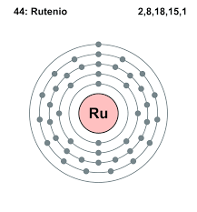El rodio es un elemento químico de número atómico 45 situado en el grupo 9 de la tabla periódica de los elementos. Su símbolo es Rh. Es un metal de transición, poco abundante, del grupo del platino. Se encuentra normalmente en minas de platino y se emplea como catalizador en algunas aleaciones de platino.
Configuración electrónica: [Kr] 4d85s1
Número atómico: 45
Masa atómica: 102,9055 u
Punto de fusión: 1.963 °C
Descubrimiento: 1803
Descubridor: William Hyde Wollaston
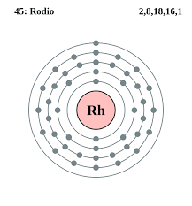El paladio es un elemento químico de número atómico 46 situado en el grupo 10 de la tabla periódica de los elementos. Su símbolo es Pd. Es un metal de transición del grupo del platino, blando, dúctil, maleable y poco abundante. Se parece químicamente al platino y se extrae de algunas minas de cobre y níquel.
Configuración electrónica: [Kr] 4d¹⁰
Número atómico: 46
Masa atómica: 106,42 u
Punto de fusión: 1.555 °C
Descubrimiento: 1803
Descubridor: William Hyde Wollaston
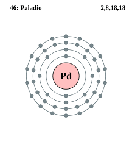La plata es un elemento químico de número atómico 47 situado en el grupo 11 de la tabla periódica de los elementos. Su símbolo es Ag. Es un metal noble, de transición, de color blanco brillante, blando, dúctil y maleable. En la naturaleza se encuentra como parte de distintos minerales o como plata libre.
Masa atómica: 107,8682 u
Número atómico: 47
Configuración electrónica: [Kr] 4d¹⁰5s¹
Densidad: 10,49 g/cm³
Punto de fusión: 961,8 °C
Punto de ebullición: 2.162 °C
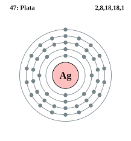El cadmio es un elemento químico con el símbolo Cd y el número atómico 48. Este metal blando de color blanco plateado es químicamente similar a los otros dos metales estables del grupo 12, el zinc y el mercurio
Configuración electrónica: [Kr] 4d¹⁰5s²
Número atómico: 48
Masa atómica: 112,411 u
Electronegatividad: 1,69
Descubrimiento: 1817
Descubridores: Friedrich Stromeyer, Karl Samuel Leberecht Hermann
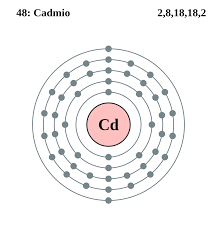El hafnio es un elemento químico de número atómico 72 que se encuentra en el grupo 4 de la tabla periódica de los elementos y se simboliza como Hf.
Configuración electrónica: [Xe] 4f¹⁴5d²6s²
Masa atómica: 178,49 u
Electronegatividad: 1,3
Número atómico: 72
Descubrimiento: 1923
Descubridores: George Hevesy, Dirk Coster
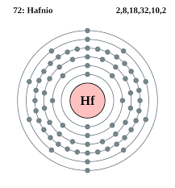El tántalo, anteriormente también conocido como tantalio, es un elemento químico de número atómico 73, que se sitúa en el grupo 5 de la tabla periódica de los elementos. Su símbolo es Ta. Se trata de un metal de transición raro, azul grisáceo, duro, que presenta brillo metálico y resiste muy bien la corrosión.
Configuración electrónica: [Xe] 4f145d36s2
Número atómico: 73
Masa atómica: 180,94788 u
Punto de fusión: 3.020 °C
Descubrimiento: 1802
Descubridor: Anders Gustaf Ekeberg
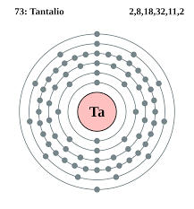El tungsteno, o wolframio, es un elemento químico con el símbolo W y el número atómico 74. El tungsteno es un metal raro que se encuentra naturalmente en la Tierra casi exclusivamente como compuesto con otros elementos. Se identificó como un elemento nuevo en 1781 y se aisló por primera vez como metal en 1783.
Número atómico: 74
Configuración electrónica: [Xe] 6s²4f¹⁴5d⁴
Punto de fusión: 3.422 °C
Masa atómica: 183,84 u
Descubrimiento: 1783
Descubridores: Juan José Delhuyar, Fausto Delhuyar
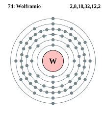El renio —de Rhenus, nombre latino del Rin— es un elemento químico, de número atómico 75, que se encuentra en el grupo 7 de la tabla periódica de los elementos y cuyo símbolo es Re, descubierto en 1925 por tres científicos alemanes.
Configuración electrónica: [Xe] 4f145d56s2
Número atómico: 75
Electrones por nivel: 2, 8, 18, 32, 13, 2
Masa atómica: 186,207 u
Descubrimiento: 1925
Descubridores: Ida Noddack, Walter Noddack, Otto Berg
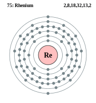El osmio es un elemento químico con el símbolo Os y número atómico 76. Es un metal de transición duro, quebradizo, de color blanco azulado en el grupo del platino que se encuentra como elemento traza en aleaciones, principalmente en minerales de platino. El osmio es el elemento natural más denso.
Masa atómica: 190,23 u
Configuración electrónica: [Xe] 4f145d66s2
Número atómico: 76
Punto de fusión: 3.033 °C
Descubrimiento: 1803
Descubridor: Smithson Tennant
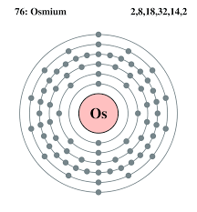El iridio es un elemento químico de número atómico 77 que se sitúa en el grupo 9 de la tabla periódica. Su símbolo es Ir. Se trata de un metal de transición, del grupo del platino, duro, frágil, pesado, de color blanco plateado.
Configuración electrónica: [Xe] 4f145d76s2
Número atómico: 77
Masa atómica: 192,217 u
Punto de fusión: 2.446 °C
Descubrimiento: 1803
Descubridor: Smithson Tennant
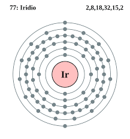El platino es un elemento químico de número atómico 78, situado en el grupo 10 de la tabla periódica de los elementos. Su símbolo es Pt. Se trata de un metal de transición blanco grisáceo, precioso, pesado, maleable y dúctil.
Configuración electrónica: [Xe] 4f¹⁴5d⁹6s¹
Número atómico: 78
Masa atómica: 195,084 u
Punto de ebullición: 3.825 °C
Electronegatividad: 2,28
Descubridor: Antonio de Ulloa
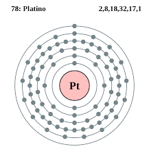El oro es un elemento químico cuyo número atómico es 79. Está ubicado en el grupo 11 de la tabla periódica. Es un metal precioso blando de color amarillo dorado. Su símbolo es Au.
Punto de fusión: 1.064 °C
Número atómico: 79
Configuración electrónica: [Xe] 4f145d106s1
Masa atómica: 196,96657 u
Radio de Van der Waals: 166 pm
Punto de ebullición: 2.700 °C
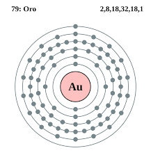El mercurio es un elemento químico con el símbolo Hg y número atómico 80. En la literatura antigua era designado comúnmente como plata líquida y también como azogue o hidrargirio.
Masa atómica: 200,59 u
Configuración electrónica: [Xe] 4f¹⁴5d¹⁰6s²
Número atómico: 80
Punto de fusión: -38,83 °C
Punto de ebullición: 356,7 °C
Radio atómico: 150 pm
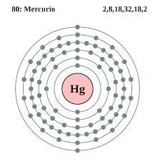El rutherfordio es un elemento químico de la tabla periódica cuyo símbolo es Rf y su número atómico es 104. Su nombre fue elegido en honor del Barón Ernest Rutherford, científico colaborador del modelo atómico y física nuclear.
Configuración electrónica: [Rn] 5f146d27s2
Masa atómica: 267 u
Radio de Van der Waals: 200 pm
Número atómico: 104
Descubrimiento: 1964
Descubridores: Albert Ghiorso, Instituto Central de Investigaciones Nucleares
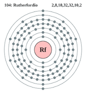El dubnio es un elemento químico de la tabla periódica de los elementos cuyo símbolo es Db y su número atómico 105. El elemento fue nombrado en honor a la ciudad de Dubná, Rusia, sede del Instituto Central de Investigaciones Nucleares, donde fue producido por primera vez.
Configuración electrónica: [Rn] 5f146d37s2
Masa atómica: 262 u
Número atómico: 105
Radio de Van der Waals: 200 pm
Descubrimiento: 1967
Descubridor: Albert Ghiorso
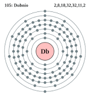El seaborgio es un elemento químico de la tabla periódica cuyo símbolo es Sg y su número atómico es 106. Es un elemento sintético cuyo isótopo más estable es el ²⁷¹Sg que tiene una vida media de 2,4 minutos. Su naturaleza química es similar a la del wolframio.
Número atómico: 106
Masa atómica: 269 u
Radio de Van der Waals: 200 pm
Serie química: Metal, Metal de transición, Elemento sintético, Elementos del periodo 7, Elementos del grupo 6
Descubrimiento: 1974
Descubridores: Albert Ghiorso, Laboratorio Nacional Lawrence Berkeley
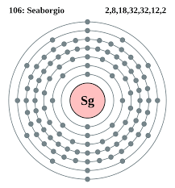El bohrio es un elemento químico de la tabla periódica cuyo símbolo es Bh y su número atómico es 107. Su nombre le fue dado en honor al científico danés Niels Bohr. Elemento químico que se espera que tenga propiedades químicas semejantes a las del elemento renio.
Masa atómica: 264 u
Número atómico: 107
Radio de Van der Waals: 200 pm
Serie química: Metal, Metal de transición, Metal pesado, Elementos del grupo 7, Elementos del periodo 7
Descubrimiento: 1981
Descubridores: Gottfried Münzenberg, Peter Armbruster
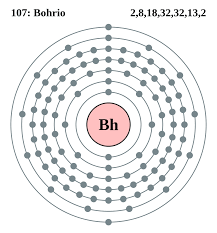El hasio es un elemento sintético de la tabla periódica cuyo símbolo es Hs y su número atómico es 108. Su isótopo más estable es el Hs-269, que tiene un periodo de semidesintegración de 9,7 segundos.
Masa atómica: 269 u
Número atómico: 108
Radio de Van der Waals: 200 pm
Serie química: Metal, Metal de transición, Metal pesado, Elementos del grupo 8, Elementos del periodo 7
Descubrimiento: 1984
Descubridores: Gottfried Münzenberg, Peter Armbruster
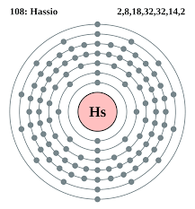El meitnerio es un elemento químico de la tabla periódica cuyo símbolo es Mt y su número atómico es 109. Es un elemento sintético cuyo isótopo más estable es el ²⁷⁸Mt, cuya vida media es de 7,6 s.
Masa atómica: 278 u
Número atómico: 109
Radio de Van der Waals: 200 pm
Serie química: Metal, Metal de transición, Elementos del periodo 7, Elementos del grupo 9
Descubrimiento: 29 de agosto de 1982
Descubridores: Gottfried Münzenberg, Peter Armbruster
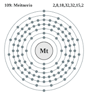El darmstatio o darmstadtio es un elemento químico de la tabla periódica cuyo símbolo es Ds y cuyo número atómico es 110, lo cual lo hace uno de los átomos superpesados.
Número atómico: 110
Masa atómica: 281 u
Número CAS: 54083-77-1
Serie química: Metal, Metal de transición, Elementos del periodo 7, Elementos del grupo 10
Descubrimiento: 1994
Descubridores: Victor Ninov, Sigurd Hofmann
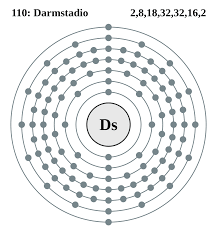El roentgenio es un elemento químico del grupo 11 de la tabla periódica cuyo símbolo es Rg y su número atómico es 111. Fue descubierto en 1994 por científicos alemanes en Darmstadt.
Número atómico: 111
Masa atómica: 282 u
Número CAS: 54386-24-2
Serie química: Metal, Metal de transición, Elementos del periodo 7, Elementos del grupo 11
Descubrimiento: 8 de diciembre de 1994
Descubridores: Sigurd Hofmann, Victor Ninov
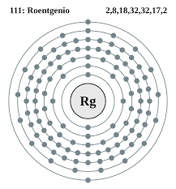El copernicio es un elemento químico de la tabla periódica cuyo símbolo es Cn y su número atómico 112. Su apariencia física no se conoce aún, pero podría calcularse, sabiendo que por ahora el isótopo ç conocido, de 285 de masa atómica, tiene una vida media de 0,24 ms. No debe confundirse con el cianuro, de fórmula CN.
Número atómico: 112
Masa atómica: 285 u
Número CAS: 54084-26-3
Serie química: Metal, Metal de transición, Metal pesado, Elementos del periodo 7, Elementos del grupo 12
Descubrimiento: 9 de febrero de 1996
Descubridores: Victor Ninov, Sigurd Hofmann
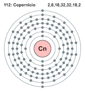